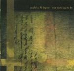

| Artist: | Parallel Or 90 Degrees |
| Title: | More Exotic Ways To Die |
| Label: | Cyclops CYCL 114 |
| Length(s): | 48 minutes |
| Year(s) of release: | 2002 |
| Month of review: | [10/2002] |
| 1) | Impaled On A Railing | 4.44 |
| 2) | A Man Of Thin Air | 5.05 |
| 3) | Embalmed In Acid | 5.42 |
| 4) | The Heavy Metal Guillotine | 5.26 |
| 5) | Drum One | 3.14 |
| 6) | The One That Sounds Like Tangerine Dream | 1.31 |
| 7) | A Body In Free Drift | 8.29 |
| 8) | The Dream | 2.37 |
| 9) | Petroleum Addicts | 11.02 |
The same holds for the somber A Man Of Thin Air. The vocals parts are rather understated, but during the chorus, melody and energy come right in and take over. Maybe I am mistaken, but it seems that the guitar plays a bigger role here than ever. The band really rocks here.
Embalmed In Acid is more in the style of a ballad, an emotional one even. Not about love or anything, but pervaded by a sense of sadness. Musically you ought to think a bit in the line of Vulgar Unicorn/Pineapple Thief here but with Tillisons vocals. A great vocal melody on this one and lots of swirly/noisy keyboards and acoustic guitar.
In comparison The Heavy Metal Guillotine is more typically PO90: loud swirling keyboards and organs, noisy guitars, this is how I remember them on stage. Again, a very strong track with some meandering guitar work, true, but no less overpowering. Wonderful, especially the "thought you..." part. Some Massive Attack in here as well I reckon, in view of some of the keyboards intermezzo.
Drum One (a variation on Theme One?) opens as mechanical artifact, and these continue throughtout, but music also sets in on this somewhat psychedelic affair. A danceable piano run, bleepy keyboards, and then the rhythm guitar setting in, make this into a totally new experience. A harrowing one at times, but the melody is always there.
The One That Sounds Like Tangerine Dream is probably supposed to mean exactly what it says. Does it really sound like them and if so which period? Well, if it has to sound like anything TD has done then it must be the very old days of Zeit and Atem, because these are dark and brooding, unstructured soundscapes with barely audible phrases, some live clapping (if this is Progfarm then I ought to be hearing myself) and some of the melodies of the previous songs running through, again barely audible.
A Body In Free Drift is Tillison singing in his low voice, starting calmly enough. Then the music takes a turn for the melodic with driving rolls of drums accompanying. Time for some power then, as the organ and guitar set in for some tension building. The vocals are pushed into the background. The song has a somewhat jazzy/moody interlude with the keyboards and piano meandering on in a typical jazzy style. The contrast with the driving catchy chorus is even stronger then. A song of epic proportions and seemingly brought entirely live (in view of the way the applause sounds I am guessing this is Bradford UK). This also signifies the end of the six parted title track (in seven parts of course).
The Dream is an atmospheric piece with some wonderful filmic melodies and plenty of noise as well. Thunderously good and painfully subtle.
The final track of the album is the long Petroleum Addicts, which opens with strong bombastic themes. Again, the band alternates heavy organ/loud guitar drenched rock with a catchy passage in which a band like New Order (at their best) shines through. Some Peter Hammill in the aggressive phrasings as well as we end the first part of this track. Languidly, dreamily we move into the second part. This part is on piano, but with mainly the same lyrics. Goosebumps as Tillison draws his tragic conclusions. Escapism won't help, not indefinitely.